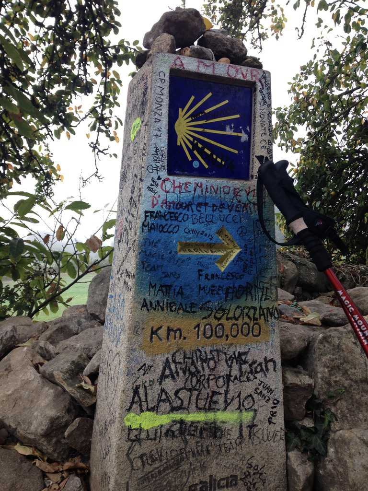

1: Beginnings
The Camino de Santiago is a network of pilgrimage routes that ultimately converge on the city of Santiago de Compostela in Northwestern Spain, where the great Saint James is rumored to be buried.
I walked the most popular route, the Camino Frances. It begins at Saint-Jean-Pied-de-Port in Southern France, a small city located north of the Pyrenees, and totals about 500 miles across Spain to the city of Santiago de Compostela. Many walk the Camino for spiritual and religious reasons. I walked in search of myself.
Actually getting on the Camino is a challenge in and of itself. Since my starting point was Saint-Jean, I had to take a flight from Charles de Gaulle Airport to Biarritz –– a small city in Southwestern France –– and from Biarritz a bus to the nearby city of Bayonne, and from Bayonne another bus to Saint-Jean.
I made my first two friends while waiting in line to board the plane in Charles de Gaulle airport. There was a tap on my shoulder, and I turned around to meet Jim and Kathy, a genial, retired couple from Truckee, California. They believed that life was too short to be lived at the wayside. Retirement and old age should enable one’s life, they said, not inhibit it. So they decided to walk the Camino.
Once we were in Biarritz, we had to catch a bus to Bayonne. Unfortunately I didn’t have any euros yet to pay for a ticket, and a currency exchange was nowhere to be found. I returned to the bus stop, and Jim noticed my concerned expression. I told him I had no euros. He laughed in response and casually handed me one. I was surprised by his generosity and thanked him. I looked at Jim and Kathy and smiled. Their sharp blue eyes radiated with youth and sincerity. It seemed as if the Camino was conspiring to make the journey possible, as if I were integral to the writing of some larger story.
I met my second pair of friends, Franca and Matilde, the dynamic 18-year-old German duo, while waiting in Bayonne. It began with a simple request:
“Hallo! Do you mind watching our stuff while we use the toilet?” Matilde asked.
“Yeah! Of course,” I replied. But toilet? Was this some form of European vernacular for bathroom? As it turns out, it was.
The bus finally arrived and we were on our way to Saint-Jean. I sat in the back of the bus where I had a panoramic view of the Pyrenees mountains. The sun-bathed ridges pierced the clear blue skies, reminding me of my many hikes in the White Mountains of New Hampshire. The shadows of leaves formed, disappeared, and reemerged in rapid oscillations on my body as we drove through the valley, a simple play of light that delighted my eye.
I directed my attention back into the bus and took notice of the numerous people before me. Matilde and Franca were sitting near the front next to a tall, lanky Texan named Stefan. I then turned my gaze toward Jim and Cathy. Jim was resisting Cathy’s attempts to straddle him. He looked somewhat embarrassed, but I knew he was reveling in the moment. Their eyes spoke of a timeless love.
After an hour or so we arrived in Saint-Jean-Pied-de-Port, the official starting point of the Camino Frances. In the near distance stood the Pyrenees, the grand guardians of the city, and on the other side rested Spain.
Along the length of the Camino, there are hundreds of yellow arrows marked on walls, tree stumps, and signposts. Their sole purpose is to lead the pilgrim toward Santiago de Compostela, the end destination of the Camino. So long as you followed the arrow, you were presumably going the right way. To trust the arrow is to make a connection with all of the past pilgrims who had already embarked on the journey. It is the first leap of faith on the Camino.
Upon arriving in Saint-Jean, my first task was to obtain a credencial. It was required to stay in the albergues –– the pilgrim hostels –– and, if you cared for it, for the certificate of completion in Santiago. I followed a trail of yellow arrows into Saint-Jean, found the Pilgrim’s Office, and received my first stamp.
I had booked an albergue in advance, but it wasn’t open yet, so I went to explore Saint-Jean. The cobblestone roads were furnished by a myriad of markets, sandwich shops, charcuteries, restaurants and kiosks. Plastered on their fronts was the notorious scallop shell of the Camino. The shell represents the idea that all paths eventually lead to Santiago. This struck me as a rich metaphor for life: wherever we are going, whatever path we are on, we will always be lead to Truth, God, oneself. Maybe there is no wrong path in life, so long as we kept walking.
The albergue opened at 4 p.m. Inside, the other pilgrims and I were greeted by a man who could have been characterized as the Yoda of the Camino. He was our hospitalero, the person in charge of running the albergue. Before checking us in, he sat us down and told us a few things.
“When you wake up tomorrow,” he began, “and you want to make yourself a cup of coffee, please make sure to give the machine only one euro. Not two, or five. One! Why? Because –– and please excuse my French –– the machine is a whore! It will take your change and not give it back. So if you want coffee before you walk, give it only one euro please. Unless you like losing your money.”
Laughter fills the room.
“One more thing. Listen. For many of you, this is your first Camino. You will get blisters. You will feel pain. You will have days when you want to cry, give up, and go home. But don’t. The Camino will provide for you and care for you. Surrender to it. It will give you everything you need –– but not always everything you want, eh? There’s a difference. Trust the Camino. Listen to it. Have faith in it. Let it guide you. Surrender to the way.”
Silence.
“Ok. So who’s ready to check in?”
